Vše, co potřebujete vědět o ubytování na Chatě Jestřabí a o možnostech v okolí — lyžování, turistika i volné termíny.
Chata se nachází na hranicích Krkonošského národního parku na okraji horské obce Jestřabí v Krkonoších, v nadmořské výšce 780 m n. m., v těsném sousedství rekreačního střediska Vítkovice v Krkonoších. Přímo ve vesnici je sjezdovka s vlekem Vurmovka — kotva vhodná i pro děti.
V létě nádherné prostředí pro pěší turistiku i vyjížďky na horských kolech. V zimě výborné podmínky pro sjezdové i běžecké lyžování — tři sjezdovky ve vzdálenosti 400–1200 m od chaty, vhodné zejména pro rodiny s dětmi. Doporučujeme běžeckou tůru Rezek – Dvoračky – Labská Bouda a zpět. V Poniklé je možnost squashe a v létě koupání, v Jilemnici krytý bazén a tenisové kurty.
Pokud je termín aspoň částečně obsazen, kalendář ukazuje, kolik kapacity zbývá. Bez záznamu je k dispozici celá chata. Rezervace a informace: info@chatajestrabi.cz, tel. 602 279 775.
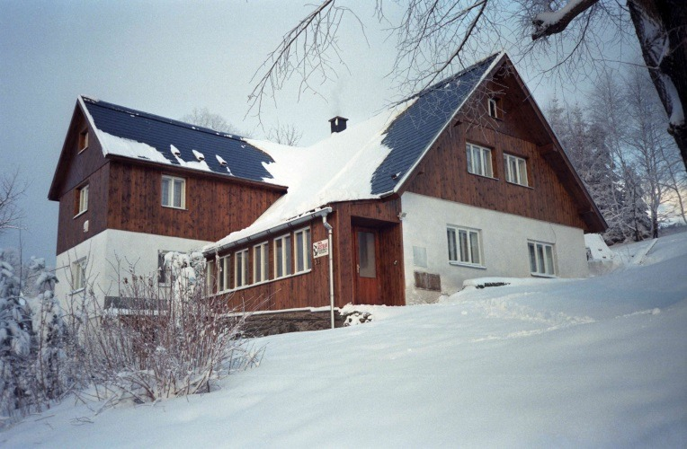
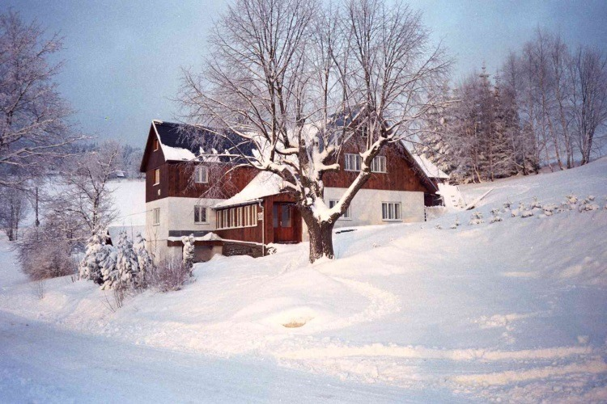
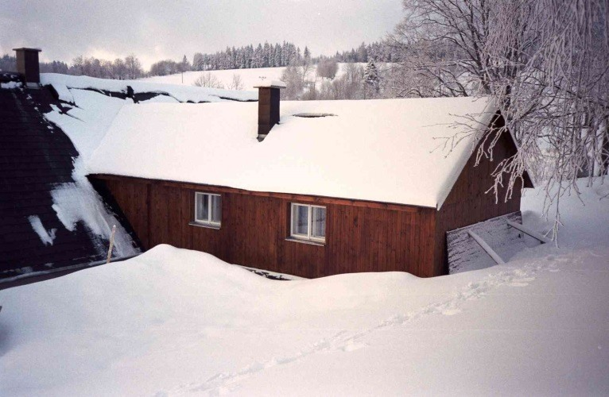
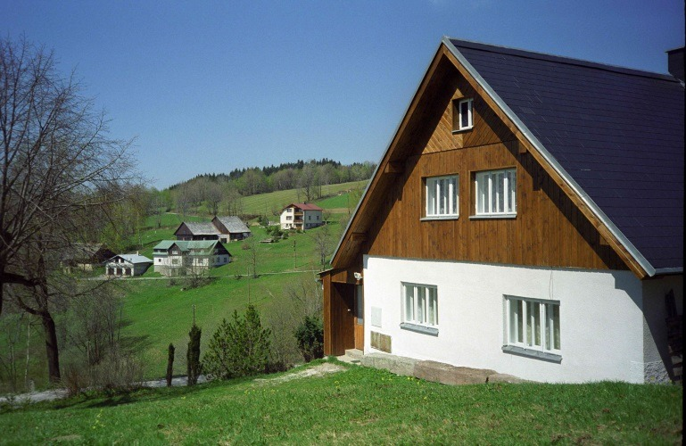
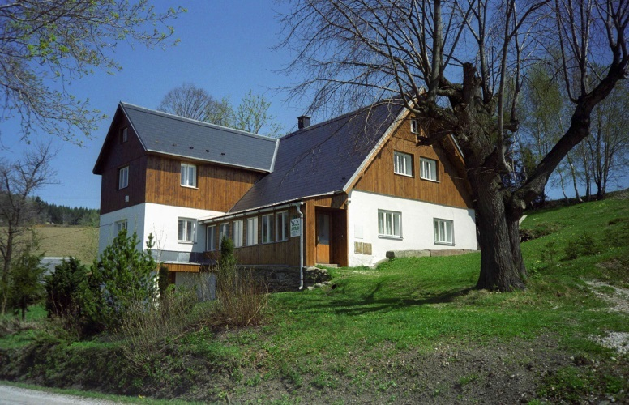
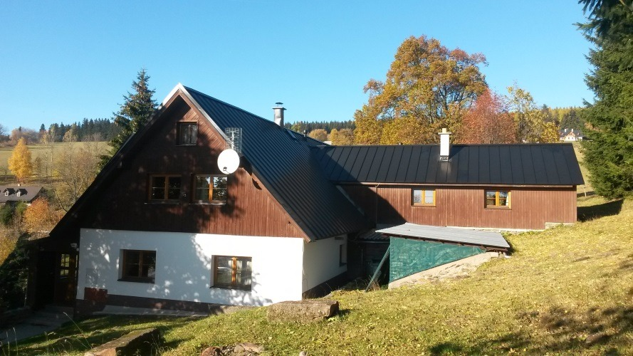
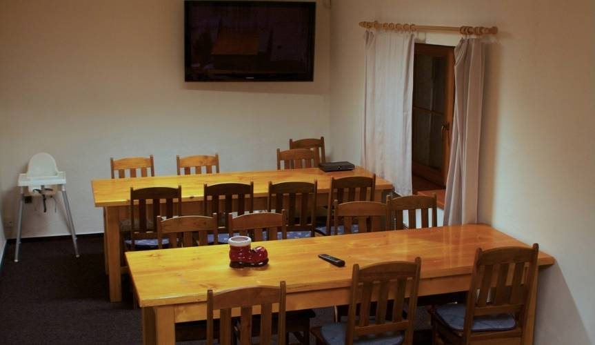
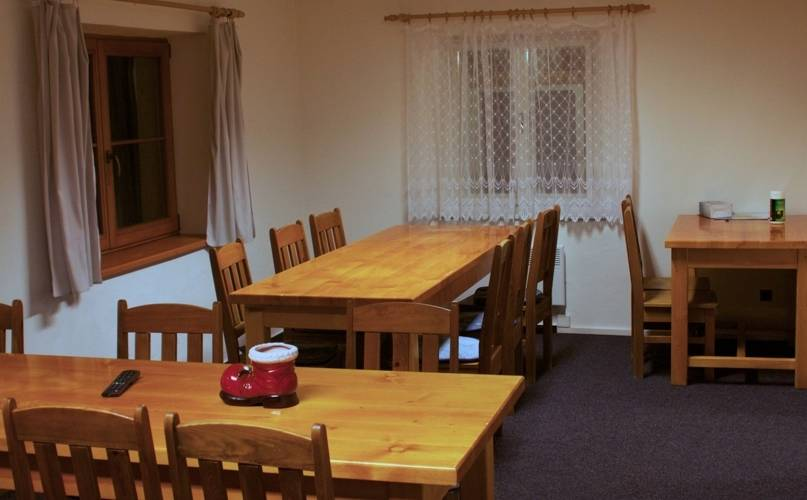
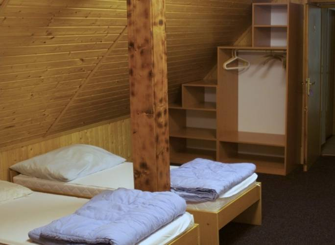
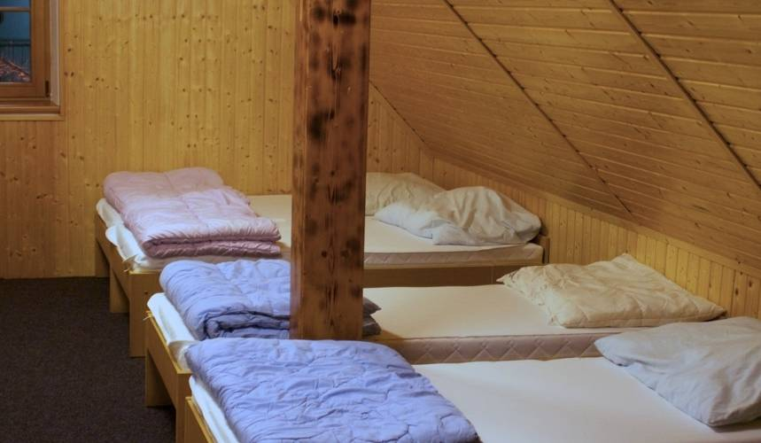
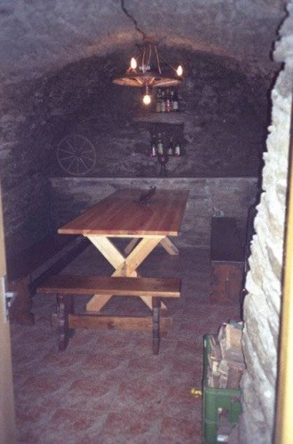
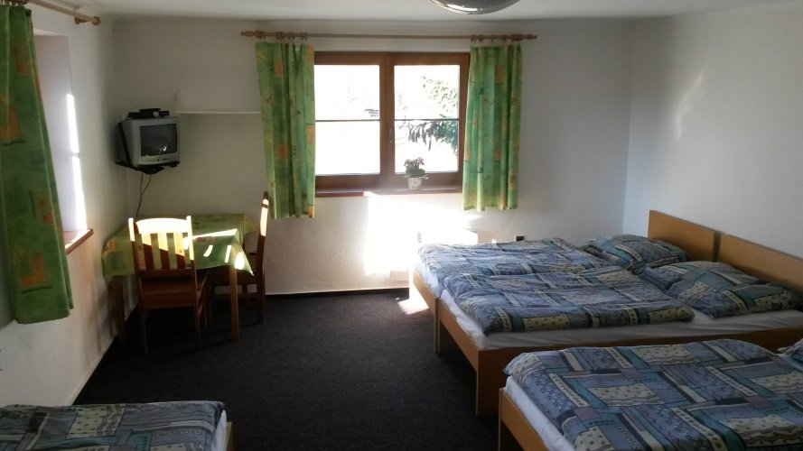
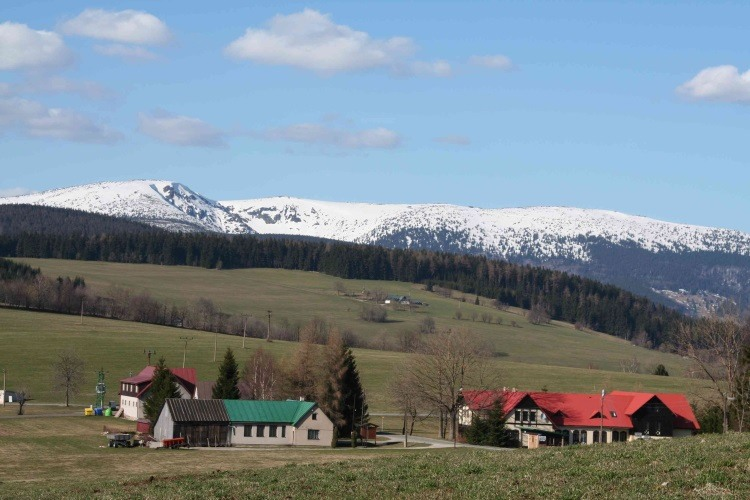
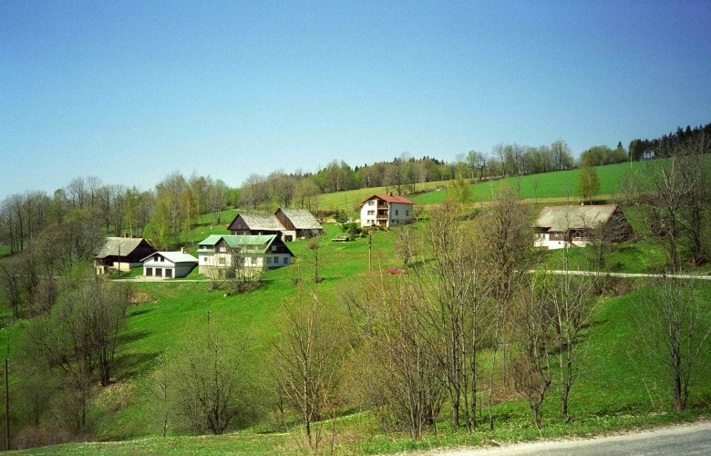
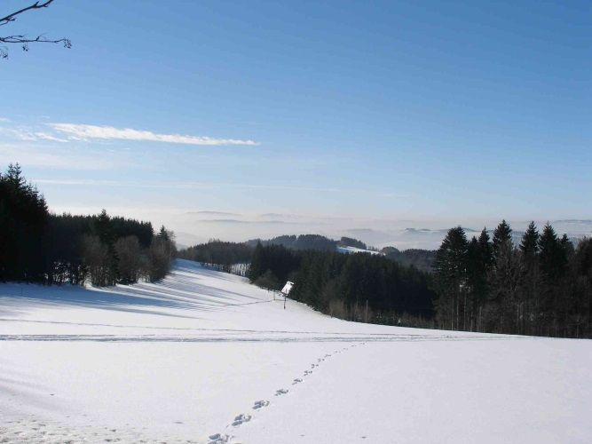
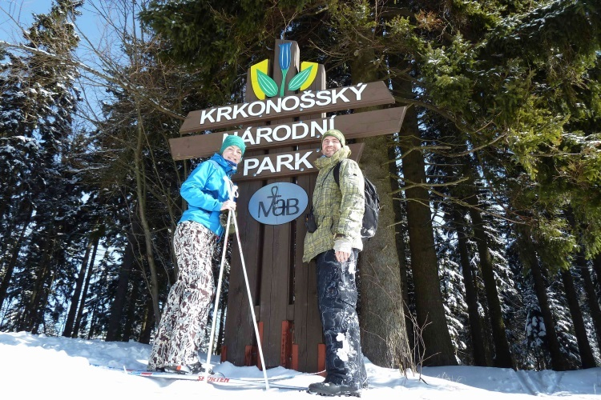
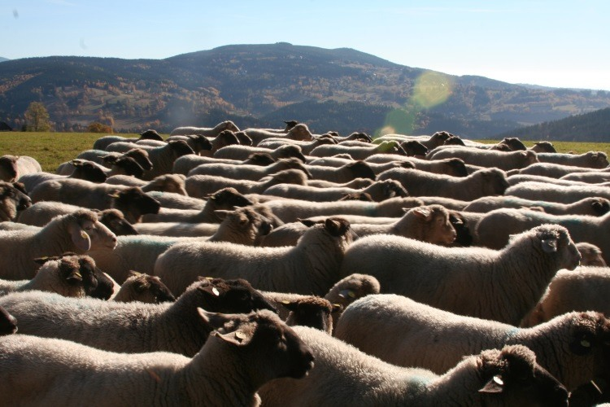